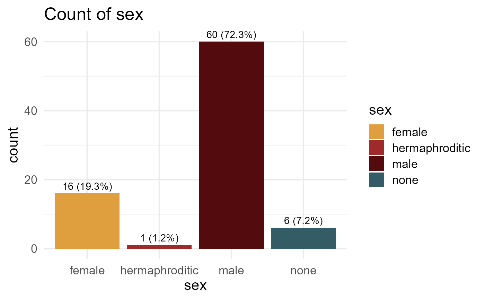

A function to produce bar plots using ggplot2 with theme, colors, and counts (percentages)
Usage
ppp_barplot(data, x_var, colors)
Arguments
- data
data frame containing the variables to be plotted
- x_var
categorical variable in the data frame that will be used to create the bar plot
- colors
character vector of color names, where the number of colors provided must match the number of unique categories in the x_var variable
Value
visually appealing bar plot displaying counts and percentages for each category in x_var, with the values printed directly on the plot
Examples
my_colors <- c("#E09F3E", "#9E2A2B", "#540B0E", "#335C67")
ppp_barplot(data = dplyr::starwars, x_var = "sex", colors = my_colors)

ppp_barplot(data = iris, x_var = "Species", colors = c("#337495", "#002a33", "#2f5a69"))